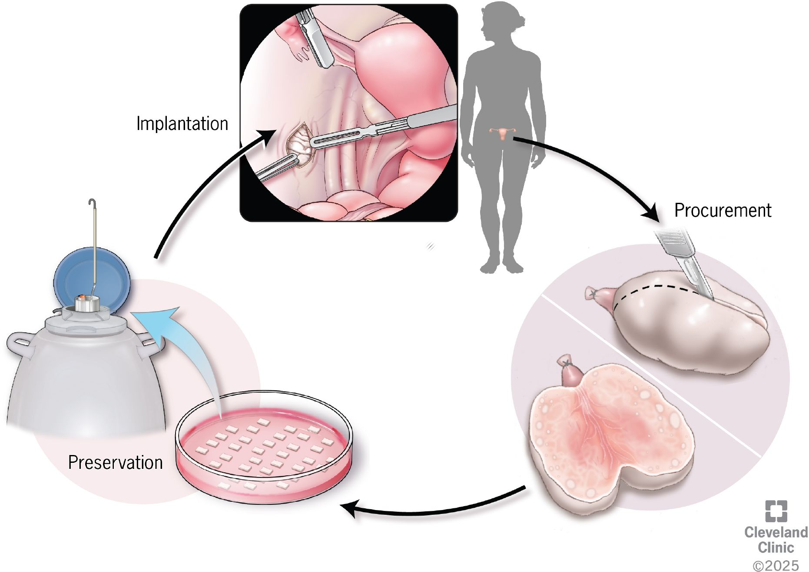
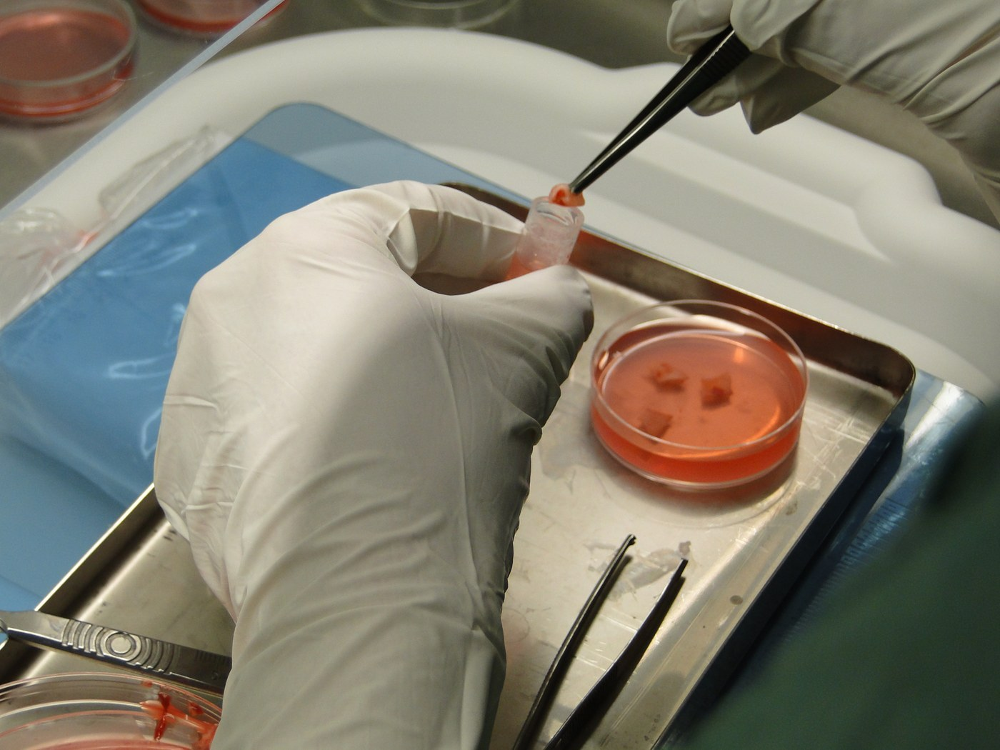

1632 — Trữ mô buồng trứng (OTC) trước dậy thì và ghép lại: kỹ thuật, nguy cơ tái nhập tế bào ác tính và kết cục sinh sản
Tags: pattern:bao-ton-sinh-san pattern:tru-mo-buong-trung vung:buong-trung protocol:noi-soi-o-bung protocol:TVUS incidentaloma:khong
Mức chắc chắn (certainty): tổng hợp y văn (literature synthesis) — hướng dẫn ngân hàng mô buồng trứng Royan 2026 (PMC13535264), tổng quan an toàn ghép mô và bệnh tồn dư tối thiểu (PMC13459637), khuyến nghị 2026 cho trẻ em/thanh thiếu niên trước ghép tế bào gốc (PMC13349870), tổng quan bảo tồn sinh sản trong bệnh máu ác tính (PMC13234456). Chưa có RCT; số liệu là tổng hợp đoàn hệ/đăng ký, ghi nguồn từng dòng.
1. Tổng quan bệnh học – cơ chế hình ảnh
- Vì sao trẻ trước dậy thì chỉ có một lựa chọn: trữ noãn cần noãn trưởng thành sau kích thích buồng trứng — trẻ trước dậy thì không có nang noãn trưởng thành, và kích thích buồng trứng làm chậm điều trị ung thư 2 tuần. Vì vậy trữ mô buồng trứng (OTC) là phương pháp duy nhất không cần kích thích và không trì hoãn hóa trị (PMC13535264, PMC13349870).
- Vì sao mô buồng trứng "sống được" sau đông lạnh: vỏ buồng trứng chứa nang nguyên thủy (primordial follicles) — tế bào nhỏ, ít nước, chuyển hóa thấp, chịu được lạnh sâu tốt hơn noãn trưởng thành. Đó là cơ sở để đông lạnh chậm (slow freezing) hoặc thủy tinh hóa (vitrification) rồi ghép lại; nang sẽ phát triển trở lại sau khi có mạch máu tái lập.
- Vì sao mô ghép chỉ "sống" vài năm: mảnh ghép không có cuống mạch, phụ thuộc tân mạch hóa từ giường ghép; phần lớn nang bị thiếu máu trong 3–5 ngày đầu, chỉ một phần sống sót. Hệ quả là thời gian hoạt động có hạn và nhiều người cần ghép lại.
- Số liệu định lượng phải nhớ:
- > 200 trẻ sinh sống khỏe mạnh sau ghép nguyên vị mô đông lạnh–rã đông, tính đến 2022 (PMC13535264).
- ~95% người được ghép phục hồi chức năng nội tiết trong 2–7 tháng; chức năng kéo dài trung bình 2–3 năm, tối đa 11–13 năm; 25% có em bé, có loạt tới 40% (PMC13459637).
- Tuổi nhận mô: < 37 tuổi khi lấy mô; có thể mở rộng tới 40 nếu có đồng thuận bằng văn bản (Royan OTB, PMC13535264). Tuổi ghép: < 45 tuổi, và khoảng không bệnh 3–5 năm (cùng nguồn).
- Kích thước mảnh: vỏ dày 1–1,5 mm, mỗi mảnh 5 × 8–10 mm; bỏ tủy, không bóc tách vỏ đơn thuần (PMC13535264). Hướng dẫn Edinburgh/Đan Mạch/FertiPROTEKT cho dải 1×2×3 mm đến 2×5×15 mm — khác nhau giữa các trung tâm.
- Thời gian vận chuyển: lý tưởng < 2 giờ; tối đa 18–24 giờ nếu bảo quản đúng môi trường (PMC13535264).
- Đông lạnh chậm (Royan): hạ từ 0 °C đến −8 °C với 2 °C/phút, seeding thủ công, tiếp −40 °C với 0,3 °C/phút, rồi −70 °C với 5 °C/phút (PMC13535264).
- Trước ghép: siêu âm theo dõi + FSH, LH, AMH; rã ít nhất một nửa số mảnh đã trữ để ghép, dựa trên mật độ nang ghi trong phiếu mô học (PMC13535264).
- Vì sao hình ảnh học quan trọng dù đây là kỹ thuật mô học: siêu âm là cách đếm AFC/đo thể tích buồng trứng để chọn người còn đủ dự trữ, loại khối buồng trứng trước lấy mô, và theo dõi mảnh ghép sau ghép (nang phát triển, nội mạc dày lên). Không có siêu âm thì không có "trước" và "sau" để so sánh.
2. Mẫu hình + chẩn đoán phân biệt theo vị trí (gamut)
- Nhóm A — trẻ gái TRƯỚC dậy thì cần hóa trị nguy cơ cao (bạch cầu cấp, u nguyên bào thần kinh, sarcoma Ewing, ghép tế bào gốc có TBI): OTC là lựa chọn duy nhất; lấy một buồng trứng hoặc mảnh vỏ qua nội soi.
- Nhóm B — thanh thiếu niên/người trưởng thành có thể trì hoãn 2 tuần: ưu tiên trữ noãn hoặc phôi (kết cục đã chuẩn hóa); OTC khi không đủ thời gian, không đáp ứng kích thích, hoặc cần cắt buồng trứng hai bên.
- Nhóm C — bệnh lành tính phải cắt buồng trứng (xoắn tái phát, endometrioma hai bên tái phát nặng, u quái hai bên): OTC lấy mô lành trước/trong mổ — đây là nhóm "iatrogenic" như bài 1628 nhưng chủ động bảo tồn thay vì chờ suy.
- Nhóm D — hội chứng Turner thể khảm: có thể còn nang; OTC chỉ khi siêu âm thấy nang và AMH còn đo được; nguy cơ mô đã cạn nang và thai kỳ nguy cơ tim mạch cao — cần hội chẩn tim mạch trước ghép.
- Nhóm E — bệnh ác tính có nguy cơ nhiễm tế bào u vào buồng trứng (bạch cầu, u nguyên bào thần kinh): OTC vẫn làm được nhưng phải đánh giá bệnh tồn dư tối thiểu (MRD) trước khi ghép — xem mục 3.
- Gamut theo vị trí ghép: nguyên vị (orthotopic) — cạnh buồng trứng còn lại, dây chằng rộng, mạc treo tử cung (ưu tiên, có thai tự nhiên); dị vị (heterotopic) — thành bụng, cánh tay (thuận tiện theo dõi, ít thai tự nhiên); tại chỗ sau cắt tử cung — hiếm.
3. Bảng so sánh phân biệt (ma trận đối chiếu)
| Thực thể (entity) | Đặc điểm / hình ảnh | Chốt vào (rule-in) | Chốt loại (rule-out) | Gợi ý xác nhận |
|---|---|---|---|---|
| OTC (trữ mô buồng trứng) | Buồng trứng có AFC đủ trên TVUS; không khối; mô vỏ hồng, dày 1–1,5 mm | Trước dậy thì + cần điều trị ngay; hoặc không thể trì hoãn 2 tuần; hoặc cắt buồng trứng hai bên | Đã có di căn buồng trứng, bệnh toàn thân nặng, không có mô vỏ lành | Nội soi lấy mô + phiếu mô học (mật độ nang); lưu vết mẫu |
| Trữ noãn (oocyte cryopreservation) | Cần kích thích 10–14 ngày, theo dõi nang trên siêu âm | Sau dậy thì + có ≥ 2 tuần; đáp ứng buồng trứng tốt | Trẻ trước dậy thì; ung thư cần điều trị ngay; AMH rất thấp | Số noãn chín; tỷ lệ sống sau rã 70–90%, sinh sống 25–40% (PMC13218867) |
| Trữ phôi | Như trữ noãn + cần bạn tình/có tinh trùng | Đã có chồng/bạn tình, sau dậy thì, đủ thời gian | Chưa có bạn tình; trẻ vị thành niên; vấn đề pháp lý | Số phôi; tư vấn pháp lý |
| Chuyển vị buồng trứng (oophoropexy) | Buồng trứng di chuyển ra ngoài trường xạ, có clip đánh dấu | Xạ trị vùng chậu là nguy cơ chính, không phải hóa trị | Hóa trị toàn thân (chuyển vị không bảo vệ) | Clip trên X-quang/CT; theo dõi tưới máu |
| Đồng vận GnRH (GnRH agonist) | Buồng trứng nghỉ tạm, không lấy mô | Bệnh máu ác tính, không mổ được, cần bảo vệ phần nào | Không thay thế OTC ở trẻ trước dậy thì; hiệu quả còn tranh luận | Theo dõi AMH sau điều trị |
| IVM (nuôi noãn non trong ống nghiệm) | Noãn lấy từ nang nhỏ không kích thích | Có thể kết hợp OTC: IVM mô/nang trong lúc chờ | Chưa phải chuẩn điều trị, tỷ lệ sinh sống thấp | Chỉ trong nghiên cứu/trung tâm chuyên biệt |
- Ảnh minh họa 1 — quy trình OTC (nguồn CC BY 4.0):

Lấy mô (procurement) → xử lý mảnh vỏ → đông lạnh bảo quản (preservation) → ghép lại (implantation). Nguồn: Frontiers in Endocrinology 2026 (PMC12950600), Fig. 2 — CC BY 4.0; hình do Cleveland Clinic vẽ, ©2025.
- Ảnh minh họa 2 — thao tác thực tế (CC BY-SA 3.0):

Mảnh vỏ buồng trứng được gắp vào dung dịch đông lạnh trong đĩa Petri. Nguồn: Wikimedia Commons, tác giả Wzsuzsanna3 (Dr. Vereczkey Attila), CC BY-SA 3.0.
4. Protocol chụp + hệ phân độ/điểm chuẩn hóa
- Bước 1 — Đánh giá trước thủ thuật (hình ảnh + xét nghiệm):
- Siêu âm đầu dò âm đạo (người đã dậy thì) hoặc đầu dò bụng (trẻ nhỏ): AFC, thể tích buồng trứng (ellipsoid D1×D2×D3×0,523), mô tả khối/nang bất thường; nếu có khối → MRI tiểu khung để loại u ác trước khi lấy mô.
- AMH, FSH, LH, E2; HIV, HBsAg, anti-HCV (bắt buộc theo Royan OTB) và serology khác theo trung tâm.
- Hội chẩn ung thư – gây mê – sinh sản: xác nhận thời điểm lấy mô không làm chậm hóa trị.
- Bước 2 — Lấy mô (nội soi là chuẩn): nội soi ổ bụng, cắt một buồng trứng hoặc mảnh vỏ ở buồng trứng còn lại; không bóc tách vỏ khỏi tủy (dễ làm rách mô), lấy cả vỏ + một phần tủy rồi xử lý ngoài cơ thể (PMC13535264). Cầm máu không dùng đốt nhiệt rộng trên buồng trứng còn lại (nguy cơ như bài 1628).
- Bước 3 — Xử lý và đông lạnh: trong tủ an toàn sinh học, bỏ tủy, cắt dải vỏ 1–1,5 mm × 5 × 8–10 mm; đông lạnh chậm theo chương trình (0 → −8 °C 2 °C/phút, seeding, −40 °C 0,3 °C/phút, −70 °C 5 °C/phút) hoặc thủy tinh hóa; lưu phiếu mô học ghi mật độ nang, độ nguyên vẹn mô cho từng bệnh nhân.
- Bước 4 — Ghép lại: khi bệnh ổn định ≥ 3–5 năm, người bệnh < 45 tuổi, có nhu cầu sinh sản/muốn phục hồi nội tiết; rã ít nhất một nửa số mảnh, ghép nguyên vị vào buồng trứng còn lại/dây chằng rộng; theo dõi FSH/LH/AMH + siêu âm mỗi 1–3 tháng để phát hiện nang phát triển.
- Bước 5 — Theo dõi sau ghép: siêu âm thấy nang ≥ 8–10 mm và nội mạc ≥ 6–8 mm là dấu hiệu mảnh ghép hoạt động; thất bại ghép = không có nang sau 6 tháng; có thể ghép lại bằng phần mô còn lại.
- Bước 6 — An toàn (MRD): với bệnh có nguy cơ nhiễm buồng trứng, không ghép mô khi chưa loại trừ tế bào ác.
flowchart TD
A[Tre gai hoac phu nu can dieu tri doc te bao] --> B{Truoc day thi hoac khong the tri hoan 2 tuan?}
B -->|Co| C[OTC: noi soi lay mo vo buong trung]
B -->|Khong| D[Trau noan hoac phoi]
C --> E[Cat dai vo 1-1,5 mm x 5 x 8-10 mm]
E --> F[Dong lanh cham hoac thuy tinh hoa + phieu mo hoc]
F --> G{Benh on dinh 3-5 nam va duoi 45 tuoi?}
G -->|Chua| H[Luu tru - theo doi benh]
G -->|Roi| I{Nguy co nhiem te bao ac trong mo?}
I -->|Bach cau - u nguyen bao than kinh| J[Xet nghiem MRD - chi ghep khi am tinh]
I -->|U dac nguy co thap| K[Ghep nguyen vi]
J --> K
K --> L[Theo doi FSH/LH/AMH + sieu am 1-3 thang]
L --> M{Co nang phat trien sau 6 thang?}
M -->|Co| N[Theo doi thai - ho tro sinh san]
M -->|Khong| O[Ghep lai phan mo con lai]
5. Biến thể bình thường và cạm bẫy
- Biến thể bình thường: buồng trứng nhiều nang nhỏ (AFC 15–30) ở trẻ vị thành niên là bình thường, không phải PCOS; đừng vì "nang nhiều" mà loại trừ OTC.
- Cạm bẫy 1 — tưởng OTC "an toàn tuyệt đối": mô buồng trứng có thể chứa tế bào bạch cầu. Tử thiết 5.571 phụ nữ bạch cầu cho thấy di căn buồng trứng 8,4%, tới 30% ở ALL; lymphoma Hodgkin 4,3%, non-Hodgkin 9,8% (PMC13459637). Không ghép mô ở nhóm nguy cơ cao khi chưa có bằng chứng âm tính.
- Cạm bẫy 2 — MRD "âm tính" không đồng nghĩa không có tế bào u: kỹ thuật hiện tại (hóa mô miễn dịch, PCR, ghép chuột) có độ nhạy giới hạn; một số trường hợp vẫn tái phát dù xét nghiệm âm. Vì vậy phải cân nhắc lợi ích – nguy cơ với từng bệnh.
- Cạm bẫy 3 — mô lấy sau nhiều đợt hóa trị: mật độ nang giảm mạnh; nếu đã truyền hóa chất, đừng hứa hẹn kết cục như nhóm chưa điều trị — cần đếm nang trên phiếu mô học trước khi tư vấn.
- Cạm bẫy 4 — u nguyên bào thần kinh: đây là u nhi di căn buồng trứng thường gặp nhất, > 60% đã có tế bào u lưu hành lúc chẩn đoán (PMC13459637) — nhóm này cần MRD đặc biệt thận trọng, khác với sarcoma Ewing (di căn buồng trứng rất hiếm).
- Cạm bẫy 5 — ung thư vú: trong 96 ca đã ghép mô, 7 ca (7%) tái phát, tất cả ở nơi khác, không do mảnh ghép (PMC13459637) — nhưng đây là dữ liệu quan sát, không phải bảo đảm.
- Cạm bẫy 6 — quên tư vấn về thời hạn: mô ghép chỉ hoạt động 2–3 năm (tối đa 11–13 năm); người bệnh cần biết có thể phải ghép lại hoặc chuyển sang noãn hiến.
- Cạm bẫy 7 — trẻ vị thành niên: cần đồng thuận của trẻ + cha mẹ, giải thích rõ bằng chứng sinh sống ở trẻ trước dậy thì còn ít (phần lớn dữ liệu là ca báo cáo/đoàn hệ nhỏ, không phải thử nghiệm) — không được ép, và phải nói rõ khả năng thất bại.
6. Tự lượng giá — Blind Quiz
Ca 1 — bé gái 9 tuổi, bạch cầu cấp dòng lympho
- Bối cảnh: cần hóa trị trong 5 ngày, chưa dậy thì, siêu âm thấy hai buồng trứng có nang nhỏ.
- Câu hỏi: Chọn phương pháp bảo tồn nào? Vì sao không trữ noãn? Nguy cơ dài hạn cần tư vấn là gì?
Bấm để hiện đáp án
- Lựa chọn: OTC — trẻ trước dậy thì không có noãn trưởng thành, và kích thích buồng trứng sẽ làm chậm hóa trị.
- Nguy cơ: mô buồng trứng ở ALL có thể chứa tế bào bạch cầu (di căn buồng trứng 8,4% chung, tới 30% ở ALL) → phải đánh giá MRD trước khi ghép.
- Tư vấn: mô ghép chỉ hoạt động 2–3 năm (tối đa 11–13), 25–40% có thai; có thể phải ghép lại.
- Nguồn: PMC13535264, PMC13459637.
Ca 2 — nữ 28 tuổi, sarcoma Ewing, có 2 tuần trước hóa trị
- Bối cảnh: đã dậy thì, AMH 2,4 ng/mL, AFC 14, chưa có bạn tình.
- Câu hỏi: Trữ noãn hay trữ mô? Vì sao không trữ phôi?
Bấm để hiện đáp án
- Lựa chọn: trữ noãn (hoặc OTC song song nếu trung tâm hỗ trợ) — có 2 tuần và dự trữ tốt; tỷ lệ sống sau rã 70–90%, sinh sống 25–40%.
- Không trữ phôi vì chưa có bạn tình và vấn đề pháp lý.
- Lưu ý: sarcoma Ewing di căn buồng trứng rất hiếm — nguy cơ tái nhập tế bào u thấp hơn bạch cầu, nhưng vẫn cần MRD nếu ghép mô.
- Nguồn: PMC13218867, PMC13459637.
Ca 3 — nữ 33 tuổi, ghép mô 8 tháng, không có kinh
- Bối cảnh: ghép nguyên vị 8 tháng trước; FSH 48 IU/L, AMH 0,05 ng/mL, siêu âm không thấy nang.
- Câu hỏi: Chẩn đoán? Bước tiếp theo?
Bấm để hiện đáp án
- Chẩn đoán: thất bại ghép/thoái triển mảnh ghép — vì sau 6 tháng không có nang phát triển và FSH vẫn cao; ~5% người ghép không phục hồi chức năng.
- Bước tiếp: ghép lại phần mô còn trữ (nếu còn) hoặc tư vấn noãn hiến; kiểm tra lại kỹ thuật rã/ghép và tình trạng mảnh ghép.
- Nguồn: PMC13535264 (tiêu chí theo dõi), PMC13459637 (95% phục hồi trong 2–7 tháng).
Bài liên quan chéo
- 1628 – POI sau mổ bóc endometrioma hai bên
- 1607 – Bảo tồn sinh sản trước hóa–xạ trị
- 1609 – Suy buồng trứng và thiếu hụt hormone sau xạ trị phụ khoa
- 1606 – Endometrioma tái phát: mổ lại hay IVF
Ảnh
images/1632_otc_SCHEMA_PMC12950600-F2.jpg— CC BY 4.0, Frontiers in Endocrinology 2026 (PMC12950600), Fig. 2.images/1632_otc_Anh_Commons-strips.jpg— CC BY-SA 3.0, Wikimedia Commons (Wzsuzsanna3).- Không tải ảnh Radiopaedia/AuntMinnie; dẫn link trong
sources.md.
Không dùng để chẩn đoán độc lập khi chưa có người hướng dẫn.